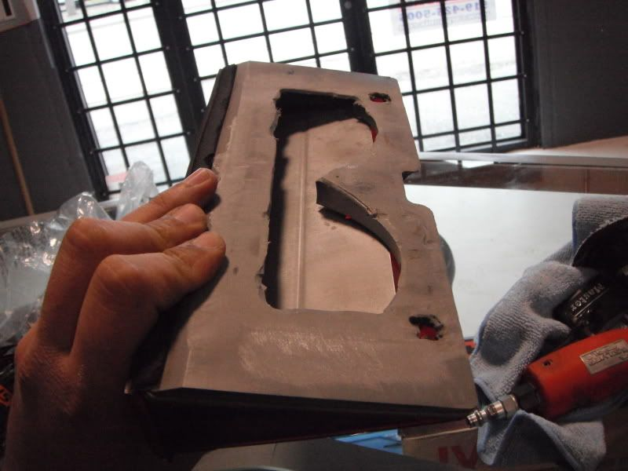
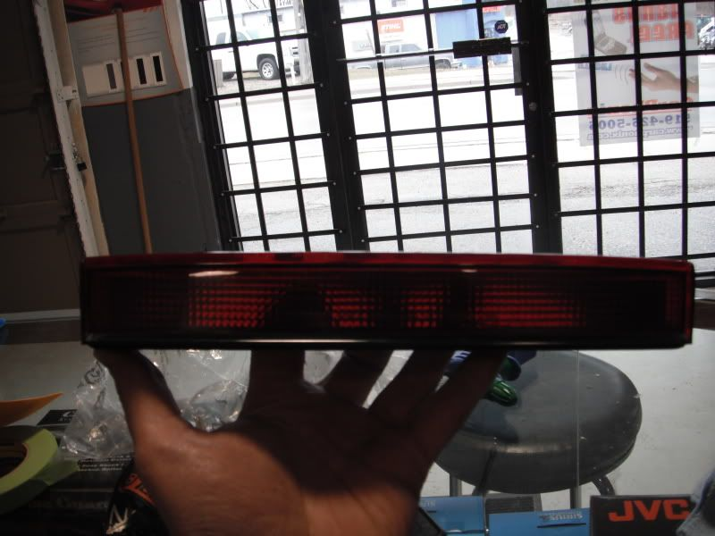
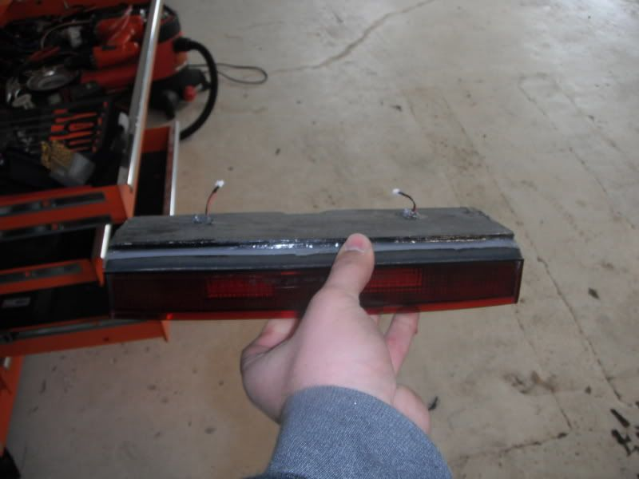
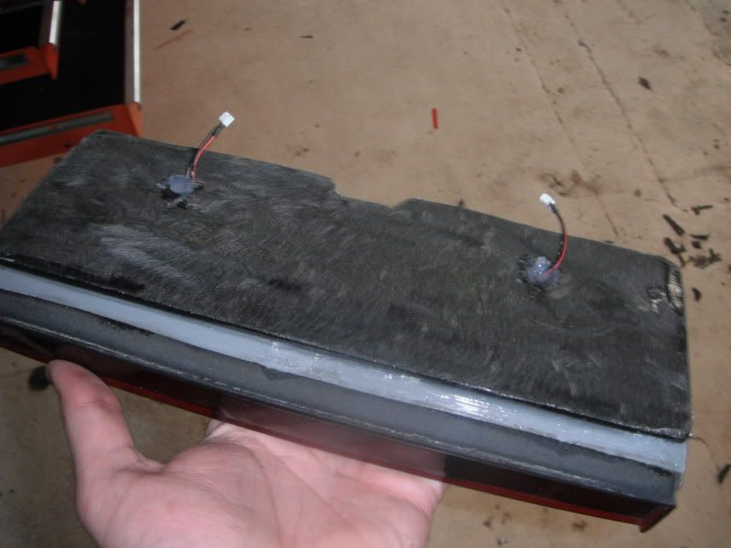

-
Soo Alot of you were wondering what I was going to do about the spoiler I got for my 1986 300ZX Turbo canadian verision. The original one was that nasty rusted foam junk, so I got one from MukahydnZ on here and retro fitted the third brake light with LED's.
Basically I took the light, ordered up two of these:
http://cgi.ebay.com/Car-Interior-36-SMD … 2c5bff69ea
And then cut off the whole junk with the factory lights stuck the two leds inside and ended up with this!




Im going to PL the light to the underside of the spoiler drill two small holes to pass the harness thru the hatch.
Ill post pics tonight as its raining out right now. -
Nice.
How bright are those SMD LED panels? I have been looking at getting some.
Also, if you are familiar with it, what color temperature are they. 5000K? Thanks.Everything is Meaningless. -
You're going to probably need something behind the red lens to diffuse the light off of those to get it to light up evenly at all.
"Beer is proof that god wants us to be happy" - Benjamin Franklin -
Just a heads up, most white LED's won't put light through a red diffuser properly. Something to do with the color spectrum they put out, doesn't have enough red in it. It's all to do with physics and nanometer wavelengths and stuff.
-
Re: How To Use 3rd Brake Light Spoiler On NON-3rd Brake mode
hey pulsecode, Ever get leds behind this thing? I can tell you a lot about what you need for those leds. type/amount and how bright they will be.
i can even calculate which resistors you should use if you decide to make your own.
use 4 pin super flux leds, red in color then decide what you want to do since each led is different you can burn one up but the next will be fine with the same current and voltage.

Copyright © 2006–. All rights reserved. Privacy Policy